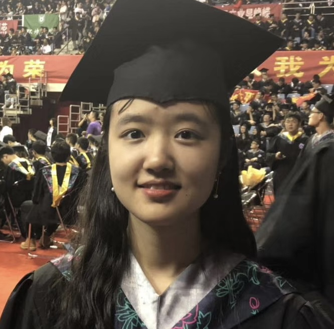

Jin Mu
I am a third year PhD student at the University of Wisconsin–Madison, advised by Prof. Guanhua Chen. My research develops reliable AI systems and agents that reason over scientific data to support evidence-based discovery and decision-making.

Selected Work
* Equal contribution.
-
Making Clinical Language Models Auditable: Concept-Guided Fine-Tuning for Robust Prediction
EMNLP 2026 Preprint
-
Fisher-R1: Training LLM Agents for Reliable Hypothesis Testing
Under review · NeurIPS 2026 Preprint
-
Polygenic Prediction of Treatment Efficacy with Causal Transfer Learning
In revision · Nature Genetics, 2026 Preprint
-
Compositional Variable Selection in Quantile Regression for Microbiome Data with False Discovery Rate Control
Statistical Analysis and Data Mining, 2024 Paper